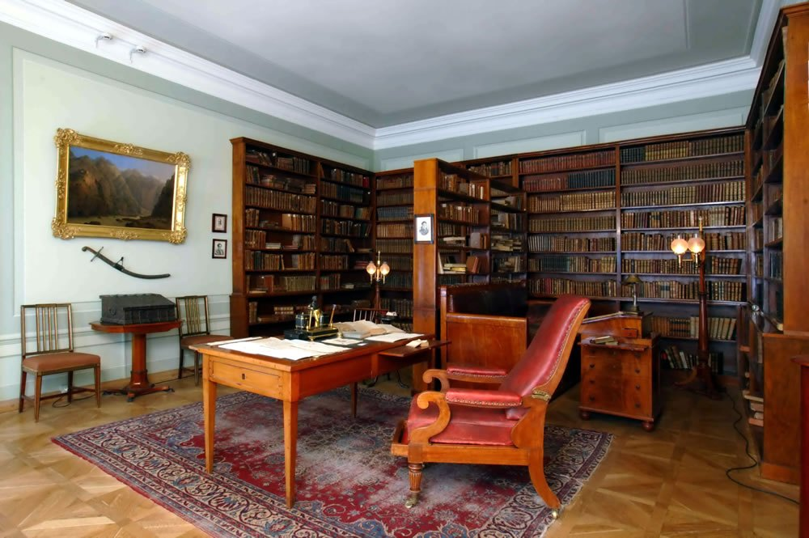
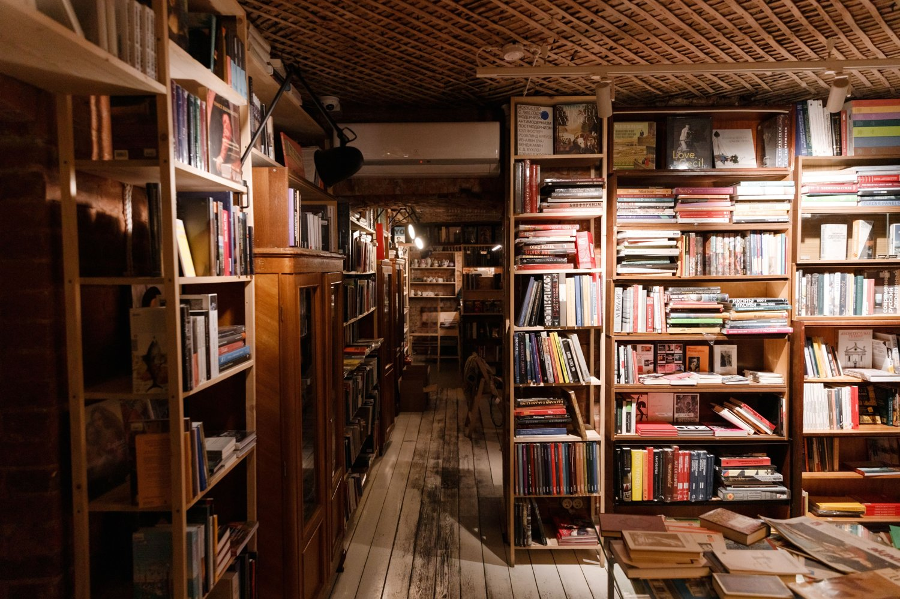

ПУТЕВОДИТЕЛЬ ПО ЛИТЕРАТУРНЫМ АДРЕСАМ
Здесь жили,
здесь писали.
Литературный Петербург
Знакомые имена, настоящие дома и книги, которые хочется перечитать. Выберите адрес и посмотрите, как Петербург входит в литературу.
Открыть карту адресов ↗
ПЕТЕРБУРГ ЧЕРЕЗ ЛИТЕРАТУРУ
Эпохи и писатели
Выберите время или имя, чтобы увидеть связанные адреса.
01 / ГОРОД В АДРЕСАХ
Найдите свой литературный адрес
Найдите писателя, произведение или улицу.
Откройте карточку и посмотрите место на Яндекс Картах.
Метки помогут найти места. Вход может находиться с другой стороны дома, поэтому перед посещением музея загляните на его сайт. Чтобы увидеть отдельный адрес, откройте карточку и нажмите «Показать на карте».
ВЫБЕРИТЕ ТЕМУ ПРОГУЛКИ
Выберите свою прогулку
Каждая прогулка объединена общей темой.
Посещение музеев планируется отдельно.
Оставьте время на чтение и остановки. Если собираетесь зайти в музей, заранее проверьте расписание и билеты на его сайте.
Пешеходный путь в Яндекс Картах ↗03 / ЛИТЕРАТУРА ПРОДОЛЖАЕТСЯ
Возьмите с собой книгу
Прочитайте небольшой фрагмент перед прогулкой.
На месте обратите внимание на детали города.
О ПУТЕВОДИТЕЛЕ
Литература рядом.
«Здесь жили, здесь писали. Литературный Петербург» приглашает посмотреть на город через книги и судьбы их авторов. Здесь есть квартиры писателей, места встреч и улицы, по которым ходят литературные герои.
Начать можно с любимого писателя, интересной эпохи или просто ближайшего адреса. Прочитайте историю, возьмите небольшой фрагмент книги и отправляйтесь гулять. Возможно, знакомый дом после этого будет выглядеть чуть иначе.

Как читать литературную карту
Писатель мог жить в одном доме, работать над книгой в другом, а её героев поселить совсем в ином месте. В карточках эти связи разделены. Там, где адрес персонажа нельзя установить точно, стоит пометка «предполагаемый».
Эпохи нужны для удобства выбора. Жизнь и творчество не всегда укладываются в их границы. Порядок остановок тоже не обязательно повторяет биографию: иногда интереснее сравнить соседние адреса или разные стороны одной темы.
Источники и фотографии
За основу взяты музейные материалы, литературная карта музея «ХХ век», городской туристический портал и сами произведения. Описания изложены своими словами. Для прогулок предложены отдельный порядок остановок, вопросы и литературные сопоставления.
У каждого места есть связь с писателем или книгой и своя роль в общей теме. Сведения о жизни авторов проверялись по музейным материалам, а сцены и описания по текстам произведений. Исследовательские версии не выдаются за установленные адреса. Вопросы в карточках предлагают поразмышлять над прочитанным и присмотреться к городу.
Ниже можно открыть источники по каждому месту. Сведения о фотографиях и лицензиях находятся в карточках. Материалы проверены 22 октября 2026 года.
Перед прогулкой
Проверьте часы работы и правила посещения на официальном сайте музея. Если адрес находится в жилом доме, осматривайте его с улицы: посещение подъездов и квартир не входит в маршрут. Яндекс Карты помогают уточнить современный путь между остановками.